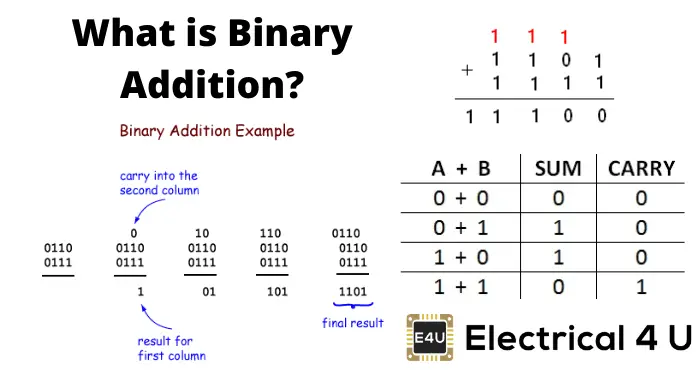

步骤说明 / Step-by-Step
示例题目 / Example Problem
Based on PDF content, calculate two 8-bit binary numbers
题目 / Problem: 01101110 + 11011110 = ?
步骤 1 / Step 1: 确保两个数都是8位
Ensure both numbers are 8-bit
- 第一个数 / First number: 01101110 (已经是8位 / already 8-bit)
- 第二个数 / Second number: 11011110 (已经是8位 / already 8-bit)
步骤 2 / Step 2: 从右向左逐位相加
Add bit by bit from right to left
逐位计算 / Bit-by-Bit
- 位0: 0 + 0 + 0(进位) = 0, 进位=0
- 位1: 1 + 1 + 0(进位) = 0, 进位=1
- 位2: 1 + 1 + 1(进位) = 1, 进位=1
- 位3: 1 + 1 + 1(进位) = 1, 进位=1
- 位4: 0 + 1 + 1(进位) = 0, 进位=1
- 位5: 1 + 0 + 1(进位) = 0, 进位=1
- 位6: 1 + 1 + 1(进位) = 1, 进位=1
- 位7: 0 + 1 + 1(进位) = 0, 进位=1
详细计算过程 / Detailed Calculation Process
| 位置/Bit | 7 | 6 | 5 | 4 | 3 | 2 | 1 | 0 |
|---|---|---|---|---|---|---|---|---|
| 进位/Carry In | 1 | 1 | 1 | 1 | 1 | 1 | 1 | 0 |
| 数字A/Num A | 0 | 1 | 1 | 0 | 1 | 1 | 1 | 0 |
| 数字B/Num B | 1 | 1 | 0 | 1 | 1 | 1 | 1 | 0 |
| 结果/Sum | 0 | 1 | 0 | 0 | 1 | 1 | 0 | 0 |
| 进位/Carry Out | 1 | 1 | 1 | 1 | 1 | 1 | 1 | 0 |
最终结果 / Final Result:
01101110 + 11011110 = 101001100
注意溢出 / Note Overflow:
由于结果是9位，而题目要求是8位，所以发生了溢出。
Since result is 9-bit but problem requires 8-bit, overflow occurred.
8位结果 / 8-bit Result: (1)01001100
视觉参考 / Visual Reference
重要要点 / Key Points
- 必须从最右侧开始计算 Must start from rightmost bit
- 每一步都要考虑上一位的进位 Consider carry from previous bit in each step
- 进位的传播是关键 Carry propagation is crucial
- 溢出表示超出了寄存器容量 Overflow indicates exceeding register capacity